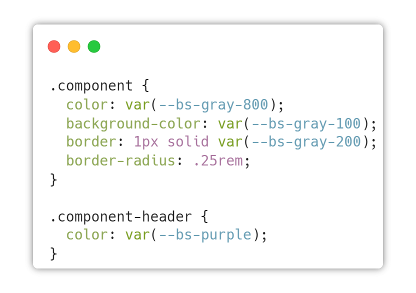

Bootstrap

Bootstrap, a sleek & intuitive CSS framework, designed to be mobile first is a robust framework that boasts of multiple CSS, JS and other front files that kick start the web and app development task. There are different components in Bootstrap that helps in the creation of drop down menu, alert boxes, and several such other features. Therefore, Bootstrap is a comprehensive solution for mobile application developers who need the entire solution.
Install via package manager
JavaScript is a more complicated Install Bootstrap's source Sass and JavaScript files via npm, RubyGems, Composer, or Meteor. Package managed installs don't include documentation or our full build scripts. You can also use any demo from our Examples repo to quickly jumpstart Bootstrap projects.
Include via CDN
When you only need to include Bootstrap's compiled CSS or JS, you can use jsDelivr. See it in action with our simple quick start, or browse the examples to jumpstart your next project. You can also choose to include Popper and our JS separately.
Build and extend in real-time with CSS variables
Bootstrap 5 is evolving with each release to better utilize CSS variables for global theme styles, individual components, and even utilities. We provide dozens of variables for colors, font styles, and more at a :root level for use anywhere. On components and utilities, CSS variables are scoped to the relevant class and can easily be modified.
Using CSS variables
Use any of our global :root variables to write new styles. CSS variables use the var(--bs-variableName) syntax and can be inherited by children elements.
Customizing via CSS variables
Override global, component, or utility class variables to customize Bootstrap just how you like. No need to redeclare each rule, just a new variable value.
.png)